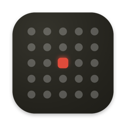

Mou Sugu
Your next meeting, always one glance away. A live countdown in the menu bar, and the button to join the call right next to it.
Why
Your Mac already knows your schedule — your menu bar doesn't. Mou Sugu puts the one thing you actually care about where you are already looking: how long until your next meeting, and the button to join it. No window to open, no app to switch to, no tab to hunt for.
What it does
-
Live countdown
in 12m: Standup. Updates every minute and rolls over to the next event on its own. -
One-click join
Finds Zoom, Meet, Teams and Webex links in the event and surfaces a Join button.
-
Smart join states
Keeps the button around for an hour after a meeting ends, and switches to Rejoin once you're well into a call.
-
Today at a glance
A popover with the rest of your day, colour-coded to match each calendar.
-
Pick your calendars
Toggle exactly which calendars feed the bar, and hide events you're marked free for.
-
Native throughout
SwiftUI, SF Symbols, translucent Control-Centre glass, full light and dark support. English and Spanish.
Private by design
Mou Sugu reads your calendar locally and sends it nowhere. There is no account, no analytics, and no server. The Mac App Store build ships without the network entitlement altogether, so it is not merely promising not to phone home — macOS would refuse to let it.
The direct download checks for its own updates, which is the only network request it ever makes. The full detail is in the privacy policy.
Install
Download the signed, notarised .dmg from
Releases, open it,
and drag Mou Sugu to your Applications folder. Grant calendar access on first
launch and you're done.